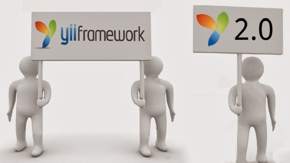

Jii: конфигурация и масштабирование
15 сентября 2015 г.
| samdark
Привет всем любителям Yii и Node.js. Давно небыло статей про Jii, но работа не стояла на месте и мне есть что рассказать!
В этой статье мы рассмотрим способы конфигурирования приложения и запуск приложений как несколько процессов.
Читать дальше
Набор Yii2 Behavior для хранения деревьев в БД и их совместного использования
15 сентября 2015 г.
| samdark
В одном своём проекте на Yii2 мне захотелось совместить Adjacency List и Nested Sets. Причём так, чтобы в случае отключения поведения Nested Sets, функционал оставался полностью работоспособен. Затем я понял, что Nested Sets мне не нужен, т. к. в базе всё равно приходилось хранить полный путь, поэтому на замену я решил применить Materialized Path. Имеющийся на GitHub Behavior (matperez/yii2-materialized-path) был недостаточно функционален, поэтому пришлось написать свой, а так как я недавно уже писал свои поведения для Adjacency List и Nested Intervals, я решил, почему бы не сделать набор таких поведений с единым API, и возможностью произвольно подключать их к модели одновременно, используя преимущество каждого.
Читать дальше
Yii environment. Наследования и переопределение конфигов
15 сентября 2015 г.
| wir_wolf
Хочу рассказать вам про интересный опыт, с которым я столкнулся на своей последней работе. Нужна была гибкая система Environment-ов. После некоторого времени экспериментов я таки добился идеального варианта. Перейдем сразу к делу.
В protected я создал environment.php c такими вот 2я классами:
Читать дальше
Конкурс Stash: как получить лицензию от JetBrains за свой код
30 июня 2015 г.
| samdarkДрузья,
Предлагаем вам поучаствовать в соревновании Stash Challenge. Первые три победителя получат лицензию на выбранный продукт компании JetBrains.
Задача
Опубликуйте код размером до 18 строк без учёта комментариев и переносов. Это может быть быстрый алгоритм, интересное решение, отличный трюк — всё, что может заинтересовать сообщество.
Читать дальше
Программирование с YII2: приступаем к работе

От переводчика.
Жизнь такая штука, как-то я начинал цикл статей по Java Spring и сообщество сообщило, что выбор пал не на самую свежую информацию. Сейчас жизнь забросила меня в хардкорное программирование на С++, а душа все равно нуждается в вебе, поэтому в свободное время решил изучить вместе с вами технологии, которые может скушать любой хостинг и в то же время сложность разрабатываемых приложений и ООП не сильно пострадает от PHP.
Исходный текст статьи на английском вы найдете по адресу http://code.tutsplus.com/tutorials/programming-with-yii2-getting-started--cms-22440
Перевод не претендует на дословность, но о грубых ошибках, если такие имеются – прошу сообщать в комментариях.
Если вы спрашиваете «что такое YII?», прочтите более ранний урок «Введение в фреймворк YII», который описывает преимущества YII, а также затрагивает вопрос новшеств второй версии фреймворка от 12 октября 2014.
Этот урок посвящен установке YII2, настройке вашего окружения, написанию классического приложения «Привет, мир!», настройке удаленного окружения для хостинга и деплоя с GitHub.
Читать дальше